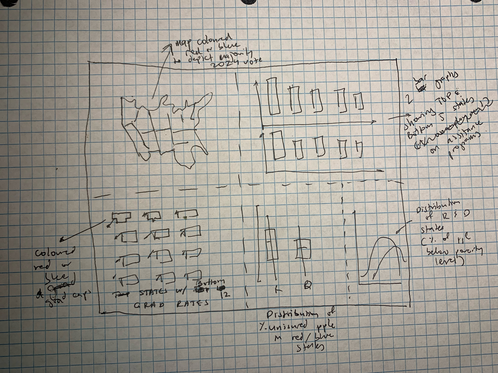
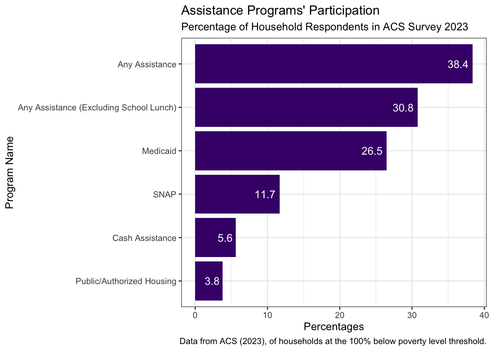
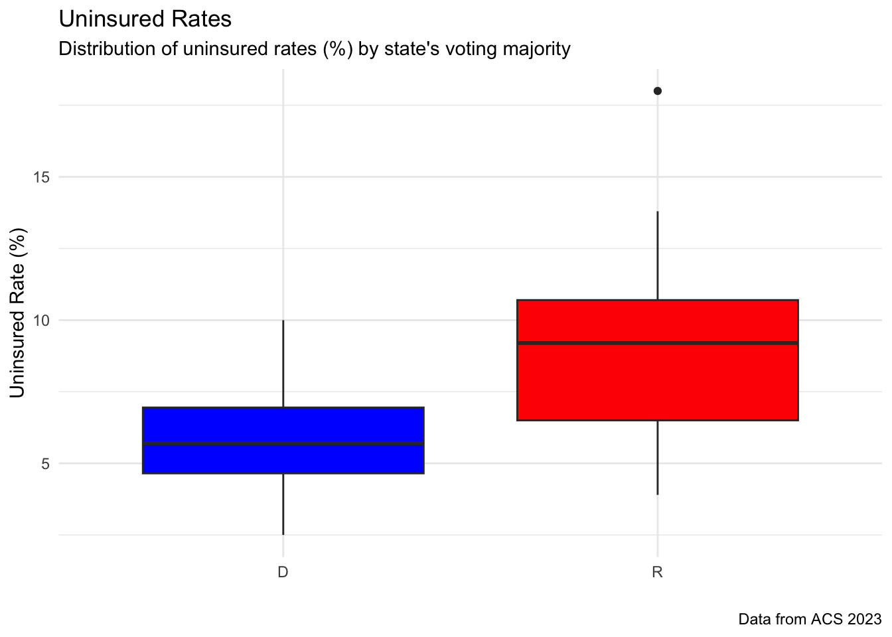
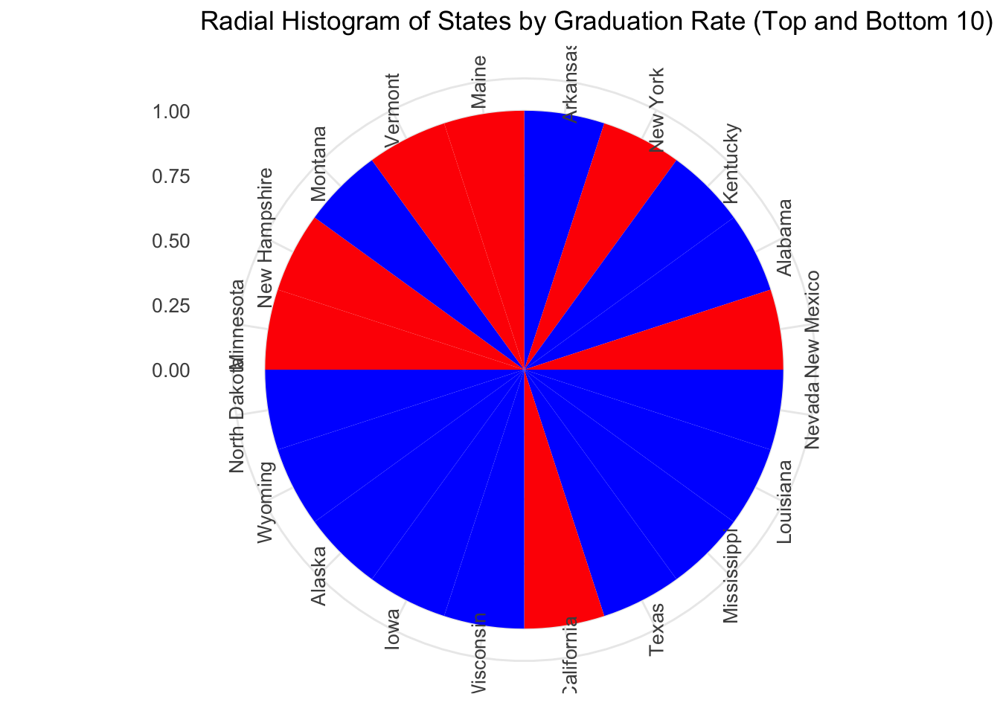
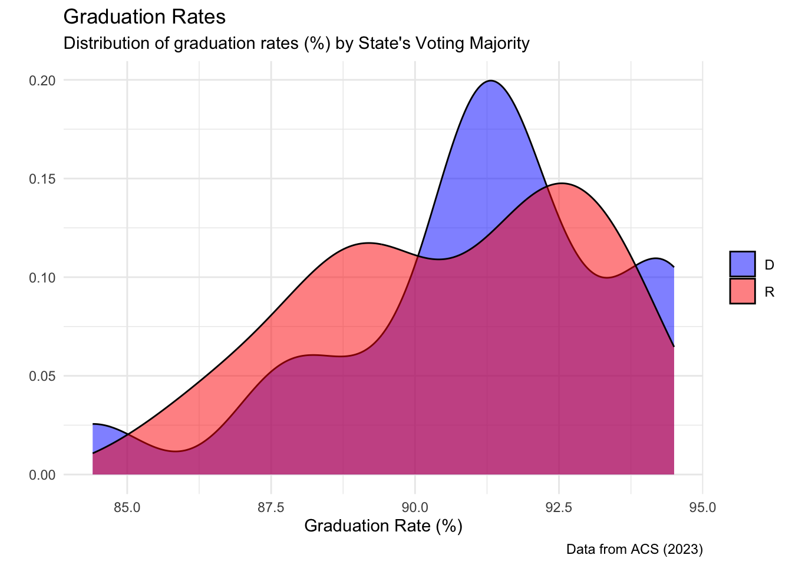

# Load libraries
library(tidycensus)
library(dplyr)
library(here)
library(janitor)
library(tidyverse)
library(tidyr)
library(plotly)
library(ggplot2)EDS240-HW3
Part 1
I plan to pursue the infographic option - as I thought this would be the most varied and interesting way to visualize data.
My question is still pretty similar to my initial question posed in the first homework. Now that I have a more concrete understanding of the data I’m working with, I’d like to specify that I want to explore the similarities and differences in 4 socio-economic characteristics (and the way they differ in Republican and Democratic states as of 2024.) (These characteristics will be healthcare, income, education, and assistance.)
I will be using census data to look at percentages of people that are uninsured, high-school/college gradation rates, poverty rates, and unemployment rates. These variables will be pulled from the ACS 2023 1-year survey. After wrangling this dataset, I will be able to look at the aforementioned characteristics as a percentage of the state populations.
I have linked visualizations that have helped me to clarify what I’d like ny vis to look like:



Part 2
Set-Up
Load Libraries
# Load data into variables
welfare_programs <- read_csv(here::here("data","welfare_programs.csv"))
census <- read_csv(here::here("data", "census_info.csv"))
scorecard <- read_csv(here::here("data", "scorecard_3.csv"))Tidy Data
state_abbr <- c(
"Alabama" = "AL", "Alaska" = "AK", "Arizona" = "AZ", "Arkansas" = "AR",
"California" = "CA", "Colorado" = "CO", "Connecticut" = "CT", "Delaware" = "DE",
"Florida" = "FL", "Georgia" = "GA", "Hawaii" = "HI", "Idaho" = "ID",
"Illinois" = "IL", "Indiana" = "IN", "Iowa" = "IA", "Kansas" = "KS",
"Kentucky" = "KY", "Louisiana" = "LA", "Maine" = "ME", "Maryland" = "MD",
"Massachusetts" = "MA", "Michigan" = "MI", "Minnesota" = "MN", "Mississippi" = "MS",
"Missouri" = "MO", "Montana" = "MT", "Nebraska" = "NE", "Nevada" = "NV",
"New Hampshire" = "NH", "New Jersey" = "NJ", "New Mexico" = "NM", "New York" = "NY",
"North Carolina" = "NC", "North Dakota" = "ND", "Ohio" = "OH", "Oklahoma" = "OK",
"Oregon" = "OR", "Pennsylvania" = "PA", "Rhode Island" = "RI", "South Carolina" = "SC",
"South Dakota" = "SD", "Tennessee" = "TN", "Texas" = "TX", "Utah" = "UT",
"Vermont" = "VT", "Virginia" = "VA", "Washington" = "WA", "West Virginia" = "WV",
"Wisconsin" = "WI", "Wyoming" = "WY", 'District of Columbia' = 'DC', 'Puerto Rico' = 'PR', 'US' = 'US'
)
# Adding the state acronym column
scorecard$state_abbreviation <- state_abbr[scorecard$State]election <- c(
'CA' = 'D', 'OR' = 'D', 'CO' = 'D', 'NM' = 'D', 'MN' = 'D', 'IL' = 'D',
'VA' = 'D', 'DC' = 'D', 'MD' = 'D', 'ME' = 'D', 'NH' = 'D', 'VT' = 'D',
'NY' = 'D', 'MA' = 'D', 'CT' = 'D', 'NJ' = 'D', 'DE' = 'D', 'RI' = 'D',
'AL' = 'R', 'AK' = 'R', 'AZ' = 'R', 'AR' = 'R', 'FL' = 'R', 'GA' = 'R',
'HI' = 'R', 'ID' = 'R', 'IN' = 'R', 'IA' = 'R', 'KS' = 'R', 'KY' = 'R',
'LA' = 'R', 'MS' = 'R', 'MO' = 'R', 'MT' = 'R', 'NE' = 'R', 'NV' = 'R',
'NC' = 'R', 'ND' = 'R', 'OH' = 'R', 'OK' = 'R', 'OR' = 'R', 'PA' = 'R',
'SC' = 'R', 'SD' = 'R', 'TN' = 'R', 'TX' = 'R', 'UT' = 'R', 'WA' = 'R',
'WI' = 'R', 'WY' = 'R', 'MI' = 'R', 'WV' = 'R'
)
scorecard$election_status <- election[scorecard$state_abbreviation]scorecard_clean <- scorecard %>%
rename('uninsured_rate' = 'Uninsured Rate (%)') %>%
rename('grad_rate' = 'High School Graduation Rate (%)') %>%
drop_na()Create Graphs
# facet Reorder
welfare_programs <- welfare_programs %>%
mutate(Welfare_type = fct_reorder(.f = Welfare_type, .x = Percent))
# Create bar graph of the percentage of respondents in welfare programs - as US census
welfare_bar_graph <- ggplot(data = welfare_programs, aes(x = Welfare_type, y = Percent)) +
geom_col(fill = "#450B78") +
geom_text(aes(label = Percent), hjust = 1.2, color = "white") +
scale_y_continuous() +
coord_flip() +
labs(title = "Assistance Programs' Participation",
subtitle = "Percentage of Household Respondents in ACS Survey 2023",
caption = "Data from ACS (2023), of households at the 100% below poverty level threshold.") +
ylab("Percentages") +
xlab("Program Name") +
theme_bw()
welfare_bar_graph
# Create box plots
uninsured_box <- ggplot(scorecard_clean, aes(x = election_status, y = uninsured_rate, fill = election_status)) +
geom_boxplot() +
labs(title = "Uninsured Rates",
y = "Uninsured Rate (%)",
x = "",
subtitle = "Distribution of uninsured rates (%) by state's voting majority",
caption = "Data from ACS 2023") +
scale_fill_manual(values = c("R" = "red", "D" = "blue")) +
theme_minimal() +
theme(legend.position = "none")
uninsured_box
# Find top and bottom 10 grad rates respectively
top_bottom_grad <- scorecard_clean %>%
arrange(desc(grad_rate)) %>%
slice_head(n = 10) %>%
bind_rows(scorecard_clean %>%
arrange(grad_rate) %>%
slice_head(n = 10))
# Create a radial histogram
grad_radial <- ggplot(top_bottom_grad, aes(x = factor(State, levels = rev(State)), fill = election_status)) +
geom_bar(stat = "count", width = 1, show.legend = FALSE) +
coord_polar(start = 0) +
labs(title = "Radial Histogram of States by Graduation Rate (Top and Bottom 10)") +
theme_minimal() +
scale_fill_manual(values = c("red", "blue")) +
theme(axis.text.x = element_text(angle = 90, hjust = 1, vjust = 0.5),
axis.text = element_text(size = 10),
axis.title = element_blank())
grad_radial
# Don't like the look of that - Create a dist plot?
grad_dist <- ggplot(scorecard_clean, aes(x = grad_rate, fill = election_status)) +
geom_density(alpha = 0.5, position = "identity") + # Create density plots
scale_fill_manual(values = c("R" = "red", "D" = "blue")) + # Color the plots
labs(title = "Graduation Rates",
subtitle = "Distribution of graduation rates (%) by State's Voting Majority",
y = "",
x = "Graduation Rate (%)",
caption = "Data from ACS (2023)") +
theme_minimal() +
theme(legend.title = element_blank())
grad_dist
Part 3
- The challenges I’m encountering are being able to build pictograms proportionality graphs, try and find state-specific benefit data, and finding graph forms that work with each other in the larger infographic context.
I think I’ll need waffle and fontawesome libraries as well as tidycensus and geospatial libraries. (I don’t believe I’ve used the waffle library before in class - so it may have a bit of a learning curve.)
The feedback I got from my peers has ben very helpful in clarifying how I would need to present this visualizations to a wider audience. I definitely need some textual context - but clarifying titles and axis labels would go a long way. I would also like to add some visual interest - as the red/blue colour schemes might become repetitive.